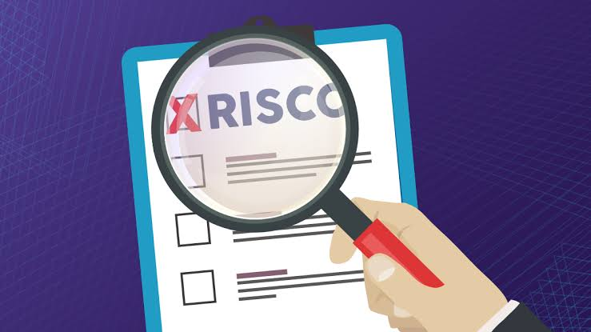

Olá! Nós somos o TechSolutions, uma equipe dedicada de especialistas em tecnologia da informação. Nosso compromisso é oferecer soluções inovadoras e personalizadas para os desafios tecnológicos de nossos clientes. Buscamos constantemente atualizações e aprimoramentos para garantir que nossos serviços estejam sempre à frente do mercado. Sua satisfação e sucesso são nossa prioridade máxima. Tem algo a melhorar? Estamos sempre abertos ao feedback e prontos para superar suas expectativas. Bem-vindo ao futuro da tecnologia - bem-vindo ao TechSolutions.
Sobre
O TechSolutions foi fundado em 2014 por Peter Parker, em Fortaleza, capital do Ceará. Desde então, temos nos dedicado incansavelmente a fornecer a melhor e mais atualizada tecnologia para nossos clientes. Nossa missão é inovar constantemente, buscando sempre o que há de melhor para impulsionar o sucesso de sua empresa. Com uma equipe apaixonada e comprometida, estamos aqui para oferecer soluções tecnológicas que transformam desafios em oportunidades.
Serviços
Planejamento estratégico de TI

Ajudamos a alinhar a tecnologia com seus objetivos de negócios.
Desenvolvimento de Software
Auxiliamos na implementação de novos sistemas ou na integração de sistemas existentes.
Suporte Técnico e Manutenção
Oferecemos suporte contínuo para resolver problemas de TI e manter sistemas funcionando sem problemas.
Avaliação de segurança da informação
Identificamos vulnerabilidades e recomendamos soluções para proteger os dados da sua empresa.
Implementação e Integração de Sistemas
Auxiliamos na implementação de novos sistemas ou na integração de sistemas existentes.
Portfólio
Implantamos o software 'NewPos', desenvolvido em 2020 sob encomenda do McDonald's. Este software simplifica o processo de registro de pedidos, tornando-o mais eficiente e intuitivo.

Auxiliamos a Microsoft a alinhar sua tecnologia com seus objetivos de negócios, garantindo uma integração perfeita entre inovação tecnológica e estratégias empresariais.

Fomos contratados pela Sony Playstation para realizar uma avaliação abrangente de vulnerabilidades em seus sistemas e oferecer soluções eficazes para garantir a segurança de seus dados e a proteção de sua infraestrutura tecnológica.